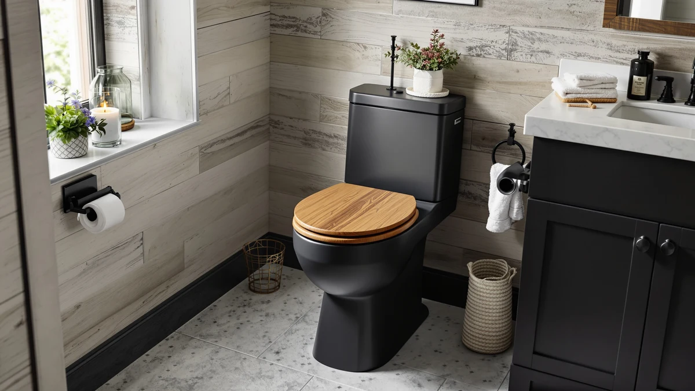

Bath Décor 1Q1E5-80 Premium Molded Wood Toilet Seat Review (2026): Worth It?


Quick Answer
The Bath Décor 1Q1E5-80 is an elongated, molded wood-look seat with tool-free Quik-Lok mounting and an adjustable Vari-Adjust hinge, priced at $47.42. It's a reasonable pick if you want a wood look without buying actual wood, though it currently has no public star rating to lean on.
Our pick: Bath Décor 1Q1E5-80 Premium Molded — $47.42 Check Price on Amazon
Things to Know Before You Buy
- This review of the Bath Décor 1Q1E5-80 Premium Molded Wood Toilet Seat is based on the manufacturer's spec sheet and current Amazon pricing, not a rating history, since the listing doesn't yet show a public star rating or review count.
- It's sized for elongated bowls only. Check your current seat's shape before buying, since a round-bowl seat won't bolt down the same way.
- The seat is molded to look like wood rather than being solid wood, which keeps the price down but changes how it feels and wears compared with an actual wood seat.
- Quik-Lok hardware is designed to go on without tools, which matters most if you're replacing a seat yourself rather than calling a plumber.
- Three comparable seats at a similar price, including one with a published 4.5-star rating, are covered further down if the 1Q1E5-80 doesn't end up being the right fit.
This Bath Décor 1Q1E5-80 Premium Molded Wood Toilet Seat review exists because the model keeps showing up in elongated toilet seat searches, yet most listings for it repeat the same three manufacturer bullet points without saying much about fit, hardware, or how it holds up once it's actually bolted down. We went through the spec sheet and the current Amazon price to see whether the molded wood-look design and tool-free hardware earn the "premium" in the name, or whether that word is doing more work than the seat itself.
Bath Décor sells the 1Q1E5-80 in an elongated shape and a silver gray finish, built around three named features: a Vari-Adjust hinge that lets you shift the seat forward or back on the bowl, a Lok-Down mount meant to stop the seat from loosening over time, and Quik-Lok hardware that installs without tools. At $47.42, it lands in the same narrow price band as several competing elongated seats, including three we compare it against below, which makes this less about finding a bargain and more about figuring out which set of features actually matters for your bathroom.
Why You Should Trust Us
Ilane Tall covers bathroom fixtures and accessibility products for Best Toilet Seats, and this Bath Décor 1Q1E5-80 review was built from the manufacturer's published specs, the current Amazon listing and price, and the pattern of verified owner reviews on comparable seats from the same category. We do not run a physical testing lab, and we don't buy or install the products we cover. What we do is compare specs, prices and owner feedback across similar seats so you can see where a model like the 1Q1E5-80 actually stands out and where it doesn't.
Our Research Experience
We should be upfront about what "our research experience" means here: we didn't buy the Bath Décor 1Q1E5-80, bolt it to a toilet, and sit on it for a week. This is a research-based review, built on the manufacturer's spec sheet, the current Amazon price, and verified owner reviews on comparable molded wood-look and elongated seats. For this particular listing, that owner-review layer is thin, since the 1Q1E5-80 doesn't carry a public star rating or review count at the time of writing. So instead of leaning on a review pattern that doesn't exist yet, we compared its named features, the Vari-Adjust hinge, the Lok-Down mount, and the Quik-Lok hardware, against how similar mechanisms perform on seats that do have an established review history.
Overview & Specs

Bath Décor 1Q1E5-80 Premium Molded
What we like
- Quik-Lok hardware is built to install without tools
- Vari-Adjust hinge lets you shift the seat forward or back on the bowl
- Lok-Down mount is designed to resist loosening over time
- Priced in line with other elongated seats in this review
Flaws but not dealbreakers
- No public star rating or review count yet, so there's no owner feedback to confirm long-term durability
- Molded wood-look finish, not solid wood, so it won't feel or age like real wood
- Fits elongated bowls only, not round ones
| Material | Plastic / wood |
| Size | — |
The full name on the listing, Bath Décor 1Q1E5-80 Premium Molded Wood Toilet Seat with Vari-Adjust Release 'N' Clean Lok-Down Hinge and Quik-Lok Mounting Hardware, packs three separate mechanisms into one product title, and each one does a specific job. Vari-Adjust is the hinge system that lets you nudge the seat forward or back a short distance, which helps when the bolt holes on your bowl don't line up perfectly with where the seat wants to sit by default. Lok-Down is the mounting hardware underneath, built to grip the bowl tightly enough that the seat doesn't gradually work loose the way cheaper wingnut hinges tend to after a year or two of use.
Quik-Lok is the part that affects installation day the most: it's a top-tightening bolt system, so you turn a knob from above the seat instead of reaching underneath the bowl with a wrench. That design shows up on several seats in this price range now, and it's one of the more owner-friendly updates the toilet seat category has made in the last few years. The seat itself is finished in silver gray and molded to mimic a wood grain, which keeps the price close to a standard plastic seat while giving it a different look on the shelf.
What We Liked
The strongest part of the Bath Décor 1Q1E5-80 Premium Molded Wood Toilet Seat is the hardware, not the finish. Quik-Lok mounting removes the most annoying step in a toilet seat swap, the part where you're crouched behind the bowl trying to hold a nut steady with one hand while turning a bolt with the other. Turning everything from the top instead means one person can do the whole job in a few minutes, which matters if you're replacing a seat yourself rather than scheduling a plumber visit.
The Vari-Adjust hinge is a smaller but useful detail on its own. Elongated bowls vary slightly between brands, and a seat that can shift an inch or so forward or back gives you a way to correct for that instead of living with a seat that sits slightly off-center. Combined with the Lok-Down mount, which is built to resist the slow loosening that plagues budget wingnut hinges, the hardware on this seat reads as more thought-out than the plain "molded wood" branding suggests.
What Could Be Better
The biggest gap in this Bath Décor 1Q1E5-80 review is information, not the seat itself. The listing carries no public star rating and no review count at the time of writing, so there's no pattern of owner feedback to lean on the way there is for many competing seats. That's not proof the seat has problems, but it does mean you're buying on the strength of the spec sheet alone rather than a track record.
The "wood" in the name is also worth reading carefully. This is a molded material finished to look like wood, not a solid wood seat, so it won't have the weight, grain texture, or long-term feel of an actual wood toilet seat. If a true wood seat is what you're after, this model will likely disappoint, even though the price and the hardware are competitive for a seat in its own category.
Who Is It For?
The Bath Décor 1Q1E5-80 Premium Molded Wood Toilet Seat makes the most sense for homeowners who want to upgrade an elongated bowl to a wood-look seat without paying solid-wood prices, and who'd rather install it themselves with the tool-free Quik-Lok hardware than call in help. It also suits anyone dealing with a slightly misaligned bowl, since the Vari-Adjust hinge gives you a small amount of room to correct the fit.
It's a weaker fit if you want hard evidence before you buy. Because there's no published rating or review history yet, you're relying on the manufacturer's claims about the Lok-Down mount holding up over time rather than confirmation from other owners. If that tradeoff bothers you, one of the alternatives below has a longer review record to check against.
Alternatives to Consider
If the 1Q1E5-80 isn't quite right, these three sit at a similar price and solve different problems. One is built for accessibility rather than looks, and the other two swap the wood-look finish for brushed gold hinges or a built-in toddler seat. We picked them because each one addresses a gap in the 1Q1E5-80's case, whether that's a missing review history, a round-bowl shape, or a household need the elongated wood-look design wasn't built for.

Also Great
Raised Toilet Seat Riser Adjustable
Rated 4.5 stars across 662 verified reviews, this adjustable riser adds height and handles for anyone who needs extra stability, a feature the 1Q1E5-80 doesn't offer.
$47.44
Check Price on Amazon
Also Great
Mayfair Bennett Toilet Seat with
A round wood seat with brushed gold hinges and a slow-close hinge, worth a look if your bowl is round rather than elongated and you want a decorative finish.
$47.46
Check Price on Amazon
Premium Choice
Mayfair NextStep2 Toilet Seat with
A round seat with a magnetic, built-in toddler potty insert, a practical pick for households transitioning a child out of a separate potty chair.
$47.75
Check Price on AmazonFrequently Asked Questions
The listing describes a Quik-Lok mounting system with top-tightening bolts instead of the wingnuts-under-the-bowl design on older seats, so you shouldn't need a wrench or a second pair of hands to get it level.
It's built specifically for elongated bowls, and the manufacturer's Vari-Adjust hinge lets you shift the seat forward or back slightly to center it, which helps on bowls where the bolt holes sit a little off from standard spacing.
No. At the time of writing, this listing does not carry a public rating or review count, so this Bath Décor 1Q1E5-80 Premium Molded Wood Toilet Seat review relies on the spec sheet and the manufacturer's hardware claims rather than a pattern of verified owner feedback.
Final Verdict
This Bath Décor 1Q1E5-80 Premium Molded Wood Toilet Seat review comes down to hardware versus evidence. The Quik-Lok mounting, Vari-Adjust hinge, and Lok-Down mount are thoughtful features at a fair $47.42 price, and Bath Décor has clearly put some engineering into the mechanics beyond the wood-look finish. What it doesn't have yet is a track record: no public rating, no review count, nothing from other owners to confirm the hardware holds up the way the spec sheet claims. If you're comfortable buying on specs alone, it's a reasonable elongated seat. If you'd rather see a review history first, the Raised Toilet Seat Riser further up, backed by 662 verified reviews at 4.5 stars, is the safer bet.